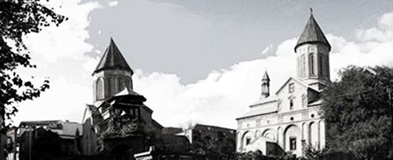

ГРУЗИЯ - АРМЕНИЯ:
за разговорами о прошлом не забыть бы о будущем

Репортаж
Ю. Адельхановой
и А. Авсаджанишвили был переведен на армянский
и опубликован в газете «Грапарак» в ноябре 2009
Во время работы
над этой статьей
мы беседовали
с большим
количеством
умных, добрых
и хороших людей.
Когда они понимали,
что цель будущей статьи
- не выяснить, кто прав
и кто не прав,
а найти пути мирного
взаимодействия
и примирения,
то интерес
к нашей работе
резко возрастал,
и было видно,
что они искренне
хотят помочь нам.
Если мы начнем
перечислять
их поименно,
то это будет
выглядеть
как субтитры
в конце
американского
кинофильма.
Мы просто хотим
выразить им
свою глубокую
признательность.
Для нашей современности, на постсоветском пространстве, в котором мы живём, стало характерным то, как это ни огорчительно, что в то время, когда все более-менее развитые страны стремятся сближаться и объединяться, мы стараемся разбежаться.
Вообще любая общественная формация, будь то нация или государство, заключает в себе широкий диапазон самых различных взглядов на те или иные реалии окружающего мира. Проще говоря, одно и то же событие разными людьми внутри одного и того же сообщества интерпретируются совершенно по-разному. Одному и тому же событию одни могут дать оценку совершенно положительную и восторженную, другие же негативную, вплоть до: «Надо резать!» И то, в каком мире мы окажемся завтра, зависит от того, чьи взгляды по воле случая, или по чьей либо злой воле возобладают. Пока, надо отметить, преобладающим становится мнение, что: «Хорошая ссора лучше неопределённого мира».
По давним, многократным наблюдениям, автомобильные пробки на городских улицах обычно создаются из-за нескольких водителей. Они, как правило, очень спешат. Их проблемы самые важные. И в то время, как подавляющее большинство терпеливо ждут нужного сигнала светофора или естественного разрешения проблемы, эти люди нарушают рядность, стараются проскочить первыми, мешают другим, а в результате все остальные становятся вынужденными заложниками созданной ими конфликтной или даже тупиковой ситуации. И теряются много тысяч часов человеческого времени. Времени человеческой жизни. И дай Бог, чтобы ещё обошлось без аварии. В жизни зачастую, приходится наблюдать совершенно аналогичное. Иногда остаётся только удивляться, сколько времени тратится на решение проблем, возникших по чьему-то неосторожному или неумному слову, чьим-то неосторожным или необдуманным действиям.
Вообще любая общественная формация, будь то нация или государство, заключает в себе широкий диапазон самых различных взглядов на те или иные реалии окружающего мира. Проще говоря, одно и то же событие разными людьми внутри одного и того же сообщества интерпретируются совершенно по-разному. Одному и тому же событию одни могут дать оценку совершенно положительную и восторженную, другие же негативную, вплоть до: «Надо резать!» И то, в каком мире мы окажемся завтра, зависит от того, чьи взгляды по воле случая, или по чьей либо злой воле возобладают. Пока, надо отметить, преобладающим становится мнение, что: «Хорошая ссора лучше неопределённого мира».
По давним, многократным наблюдениям, автомобильные пробки на городских улицах обычно создаются из-за нескольких водителей. Они, как правило, очень спешат. Их проблемы самые важные. И в то время, как подавляющее большинство терпеливо ждут нужного сигнала светофора или естественного разрешения проблемы, эти люди нарушают рядность, стараются проскочить первыми, мешают другим, а в результате все остальные становятся вынужденными заложниками созданной ими конфликтной или даже тупиковой ситуации. И теряются много тысяч часов человеческого времени. Времени человеческой жизни. И дай Бог, чтобы ещё обошлось без аварии. В жизни зачастую, приходится наблюдать совершенно аналогичное. Иногда остаётся только удивляться, сколько времени тратится на решение проблем, возникших по чьему-то неосторожному или неумному слову, чьим-то неосторожным или необдуманным действиям.
Армянская пресса донесла, что на холмах Грузии лежит ночная мгла
В последний день фестиваля документального кино «Я – человек» в Ереване мы, журналисты из Грузии, отвечали на вопросы ереванской аудитории. Нас спрашивали про августовские события, про членство в НАТО, один мальчик задал даже философский вопрос: «Что такое менталитет?» Один из вариантов ответа, кстати, был: «Менталитет, как традиционная совокупность представлений о нормах поведения штука хорошая, но зачастую это то, что мешает разным людям воспринимать друг друга». Неожиданно для нас преподавательница госуниверситета, историк, попросила прокомментировать акт вандализма, совершенный на пантеоне Ходживанк. Мы не смогли ответить, мы просто не знали, о чем идет речь. Обстановка накалилась. Нам оставалось только оправдываться, что не мы, мол, это сделали и не наши знакомые. Ситуацию в тот раз спасла сотрудник посольства Грузии в Армении. Отдуваться за наше незнание пришлось ей.
В дальнейшем, в результате ознакомления с армянскими СМИ, у нас создалось впечатление, что в Армении культивируется мнение, что в Грузии опасно говорить на армянском, что армян всячески притесняют, что грузины варварски относятся именно к армянскому культурному наследию и что политика страны направлена на последовательное уничтожение армянства вообще и следов армянской культуры в частности. Признаюсь честно, мы были неприятно удивлены.
Да и грузинская пресса тоже позволяет себе антиармянские выпады. Это заставило задуматься, а все ли ладно в Датском Королевстве?
Итак, мы задались целью выяснить, какие проблемы существуют между грузинским и армянским народами, и главное, как их можно решить.
В дальнейшем, в результате ознакомления с армянскими СМИ, у нас создалось впечатление, что в Армении культивируется мнение, что в Грузии опасно говорить на армянском, что армян всячески притесняют, что грузины варварски относятся именно к армянскому культурному наследию и что политика страны направлена на последовательное уничтожение армянства вообще и следов армянской культуры в частности. Признаюсь честно, мы были неприятно удивлены.
Да и грузинская пресса тоже позволяет себе антиармянские выпады. Это заставило задуматься, а все ли ладно в Датском Королевстве?
Итак, мы задались целью выяснить, какие проблемы существуют между грузинским и армянским народами, и главное, как их можно решить.
Земные дороги ведут не в Рим
Армянское кладбище Ходживанк в старом районе Тбилиси, Авлабар, было открыто в 1654 г. при царе Ростоме. В 1936 г. по приказу тогдашнего председателя компартии Грузинской ССР Л.П. Берии кладбище Ходживанк было снесено, и на его месте был разбит парк культуры и отдыха. Могилы наиболее выдающихся деятелей культуры, в первую очередь писателя Раффи, были перенесены с кладбища Ходживанк на гору Элия, там же, на Авлабаре. Так в 1937 г. был основан Пантеон Великих армянских общественных деятелей культуры. Родственникам же других была дана возможность перезахоронить своих покойных, которой они и воспользовались. Но, воспользовались, естественно далеко не все.
Для ясности картины следует отметить, что в 30-е годы ХХ столетия были снесены старое Верийское кладбище (сейчас там находится новая филармония и бывший Кировский парк, ныне парк Вере) и кладбище в Дидубе. Нынешний парк Ваке был разбит в начале 40-х годов также на месте кладбища. Да и где сейчас Проспект маршала Баграмяна в Ереване, тоже раньше было кладбище.
В 1996 г. на территории городского парка (кладбища Ходживанк уже не существовало 60 лет) грузинская Патриархия начала возводить собор св. Троицы. Конечно же, при проведении нулевого цикла строительных работ были вскрыты останки в старых захоронениях. Конечно же, строители (как всегда) отнеслись к ним, как и остаткам разрушенных надгробных плит и памятников, без должного почтения, что и вызвало волну возмущения как среди живущей на территории Грузии армянской диаспоры, так и жителей Армении. В Армении эти события были восприняты, как случай злонамеренного посягательства чуть ли не на действующее армянское кладбище, прямого вандализма и разрушения могил.
Как справедливо заметили опрошенные в связи с этим люди как грузинского, так и армянского происхождения, по-христиански было бы правильно перезахоронить потревоженные останки. Такое же мнение у советника президента Вана Байбурта, священника церкви Сурб Геворк (св. Георгия) отца Нарека и Артёма Киракозова, члена союза армянских писателей в Грузии.
Печально, но факт: тревожить покойников у нас не стесняются. На старых кладбищах уже давно не хватает места. Заметив, что за могилой никто не ухаживает, работники кладбищ перепродают это место втридорога без зазрения совести и не глядя на национальность и вероисповедание усопших. Уж точно: «…несть иудея, несть эллина». Это явление характерно для всего постсоветского пространства, не только для Грузии.
Для ясности картины следует отметить, что в 30-е годы ХХ столетия были снесены старое Верийское кладбище (сейчас там находится новая филармония и бывший Кировский парк, ныне парк Вере) и кладбище в Дидубе. Нынешний парк Ваке был разбит в начале 40-х годов также на месте кладбища. Да и где сейчас Проспект маршала Баграмяна в Ереване, тоже раньше было кладбище.
В 1996 г. на территории городского парка (кладбища Ходживанк уже не существовало 60 лет) грузинская Патриархия начала возводить собор св. Троицы. Конечно же, при проведении нулевого цикла строительных работ были вскрыты останки в старых захоронениях. Конечно же, строители (как всегда) отнеслись к ним, как и остаткам разрушенных надгробных плит и памятников, без должного почтения, что и вызвало волну возмущения как среди живущей на территории Грузии армянской диаспоры, так и жителей Армении. В Армении эти события были восприняты, как случай злонамеренного посягательства чуть ли не на действующее армянское кладбище, прямого вандализма и разрушения могил.
Как справедливо заметили опрошенные в связи с этим люди как грузинского, так и армянского происхождения, по-христиански было бы правильно перезахоронить потревоженные останки. Такое же мнение у советника президента Вана Байбурта, священника церкви Сурб Геворк (св. Георгия) отца Нарека и Артёма Киракозова, члена союза армянских писателей в Грузии.
Печально, но факт: тревожить покойников у нас не стесняются. На старых кладбищах уже давно не хватает места. Заметив, что за могилой никто не ухаживает, работники кладбищ перепродают это место втридорога без зазрения совести и не глядя на национальность и вероисповедание усопших. Уж точно: «…несть иудея, несть эллина». Это явление характерно для всего постсоветского пространства, не только для Грузии.
Пантеон великих армянских деятелей - Ходживанк
7 лет тому назад произошло преступление на Пантеоне Ходживанк. Неизвестные злоумышленники обвязали тросом 4-метровую стелу на могиле Раффи и сбросили ее. Уж очень соблазнительно выглядела 20 килограммовая бронзовая лира, венчающая стелу. При этом была расколота мраморная могильная плита. По этому факту было возбуждено уголовное дело, но преступников так и не нашли.
Примерно в этот же период времени в Тбилиси был похищен бронзовый бюст Нодара Думбадзе у входа в одноименный парк, один из бронзовых бюстов напротив I корпуса университета, а так же статуя работы Зураба Церетели на улице Горгасала. Медные фигурки из скульптурной композиции «Маленький принц», украшающей фонтан в Круглом садике в Ваке и по сей день являются объектом посягательства охотников за цветным металлом. Каждый раз отливают новые, и каждый раз их крадут. Мы уже не говорим о могильных оградах и медных и алюминиевых проводах.
Происшедшее на Ходживанке не становится от этого менее мерзким. В этом случае два писателя, Раффи и Нодар Думбадзе – собратья по несчастью. Так же как и два народа, армяне и грузины.
Генрих Мурадян, председатель Союза армян Грузии, принимавший участие в реставрации пантеона рассказывает, что: «Сразу после происшествия тогдашний председатель парламента, покойный Зураб Жвания срочно прибыл на пантеон в сопровождении начальника полиции и мэра Тбилиси Вано Зоделава. В присутствии посла Армении Георгия Хосроева он отдал приказ начальнику полиции расследовать это дело и мэру Тбилиси немедленно начать реставрационные работы на пантеоне». Будучи тогда замминистра экономики, Генрих Мурадян через посла Армении связался с мэром Еревана, Робертом Назаряном, и тот охотно принял участие в расходах по возрождению пантеона.
Мэры городов Тбилиси и Еревана взяли инициативу реставрации пантеона в свои руки. Две мэрии согласованно распоряжались финансами, выделенными на это благое дело.
Юрий Сафаров, советник Инженерной академии Грузии, и председатель ревизионной комиссии Союза армян Грузии координировал реставрационные работы, сопровождал машины со стройматериалами из Армении, встречая их на границе. Ему приходилось урезонивать алчущих рубля таможенников и автоинспекцию. Он безусловно считает, что на пантеоне произошел акт вандализма, но (и это мнение преобладает среди остальных опрошенных) полагает, что преступники действовали не из антиармянских, а из корыстных побуждений.
По словам окрестных жителей, до реставрации на пантеоне армянские и грузинские ребятишки часто играли в футбол, а по ночам местные пьяницы "культурно отдыхали". Некоторые могильные плиты были расколоты уже давно.
В 2002 г. на открытии отреставрированного пантеона присутствовал президент Грузии Эдуард Шеварднадзе и другие высокопоставленные лица Армении и Грузии. Сейчас действующий пантеон огорожен бетонной и чугунной оградой, чугунные ворота закрываются на замок. При нем дежурят два сторожа, которые сменяют друг друга через сутки. Территория пантеона принадлежит управлению культуры г. Тбилиси и его директор ответственен за ее сохранность. Скоро планируется очередное благоустройство пантеона, опять же при участии обеих мэрий.
Примерно в этот же период времени в Тбилиси был похищен бронзовый бюст Нодара Думбадзе у входа в одноименный парк, один из бронзовых бюстов напротив I корпуса университета, а так же статуя работы Зураба Церетели на улице Горгасала. Медные фигурки из скульптурной композиции «Маленький принц», украшающей фонтан в Круглом садике в Ваке и по сей день являются объектом посягательства охотников за цветным металлом. Каждый раз отливают новые, и каждый раз их крадут. Мы уже не говорим о могильных оградах и медных и алюминиевых проводах.
Происшедшее на Ходживанке не становится от этого менее мерзким. В этом случае два писателя, Раффи и Нодар Думбадзе – собратья по несчастью. Так же как и два народа, армяне и грузины.
Генрих Мурадян, председатель Союза армян Грузии, принимавший участие в реставрации пантеона рассказывает, что: «Сразу после происшествия тогдашний председатель парламента, покойный Зураб Жвания срочно прибыл на пантеон в сопровождении начальника полиции и мэра Тбилиси Вано Зоделава. В присутствии посла Армении Георгия Хосроева он отдал приказ начальнику полиции расследовать это дело и мэру Тбилиси немедленно начать реставрационные работы на пантеоне». Будучи тогда замминистра экономики, Генрих Мурадян через посла Армении связался с мэром Еревана, Робертом Назаряном, и тот охотно принял участие в расходах по возрождению пантеона.
Мэры городов Тбилиси и Еревана взяли инициативу реставрации пантеона в свои руки. Две мэрии согласованно распоряжались финансами, выделенными на это благое дело.
Юрий Сафаров, советник Инженерной академии Грузии, и председатель ревизионной комиссии Союза армян Грузии координировал реставрационные работы, сопровождал машины со стройматериалами из Армении, встречая их на границе. Ему приходилось урезонивать алчущих рубля таможенников и автоинспекцию. Он безусловно считает, что на пантеоне произошел акт вандализма, но (и это мнение преобладает среди остальных опрошенных) полагает, что преступники действовали не из антиармянских, а из корыстных побуждений.
По словам окрестных жителей, до реставрации на пантеоне армянские и грузинские ребятишки часто играли в футбол, а по ночам местные пьяницы "культурно отдыхали". Некоторые могильные плиты были расколоты уже давно.
В 2002 г. на открытии отреставрированного пантеона присутствовал президент Грузии Эдуард Шеварднадзе и другие высокопоставленные лица Армении и Грузии. Сейчас действующий пантеон огорожен бетонной и чугунной оградой, чугунные ворота закрываются на замок. При нем дежурят два сторожа, которые сменяют друг друга через сутки. Территория пантеона принадлежит управлению культуры г. Тбилиси и его директор ответственен за ее сохранность. Скоро планируется очередное благоустройство пантеона, опять же при участии обеих мэрий.
Храм Норашен Сурб Аствацацин (Храм Богородицы)
Сложнее оказалась ситуация с армянской церковью Норашен, расположенной всего в 500 м от центральной площади г. Тбилиси на ул. Леселидзе, в одном дворе с грузинской церковью Джврис мамис монастери. Она, как и прочие древние церкви и храмы, находится в ведении министерства культуры Грузии. Они имеют статус исторических и архитектурных памятников. Вопрос о ее конфессиональной принадлежности был поднят ещё в 1989 году.
Спустя 5 лет, в 1994 году, о. Тариел Сикинчинашвили разбил церковный алтарь и хачкары и испортил уникальные фрески работы Ованеса Овнатаняна. После этого случая Католикос всех армян Гарегин I приехал в Грузию и встретился с Патриархом всея Грузии Илией II. Они договорились о консервации церкви Норашен, и отложили решение вопроса о статусе церкви «до наступления лучших времён». На храм было решено повесить два замка, ключи вручить армянской и грузинской стороне по отдельности, чтобы они могли посещать храм только совместно.
С тех пор прошло почти 15 лет. «Лучшие времена» так и не наступили, а у армянской епархии есть зафиксированные факты, что грузинской стороной, в лице о. Тариела и его сподвижников, производятся попытки решить вопрос о конфессиональной принадлежности храма незаконным путём. В 2005 г. о. Тариел начал строить забор вокруг двора, где находятся обе церкви. Замки на дверях храма поменяли. Используя грузинскую символику на ограде и стирая армянские надписи, он пытается придать храму «грузинский, православный» вид. При этом Патриарх всея Грузии Илия II не давал благословения о. Тариелу на строительство забора и мэрия признает действия его незаконными. Все эти годы строительство забора то прекращается, то возобновляется.
На данный момент армянское духовенство удерживает своих прихожан от попыток снести незаконно построенный забор.
По словам священника церкви Сурб Геворк отца Нарека, открытого противостояния между грузинской и армянской церквями нету. Отец Тариел – это еще не вся грузинская церковь. В грузинской Патриархии хорошо относятся к представителям Армянской Апостольской Церкви, но есть отдельные лица, которые не желают передавать церковь Норашен армянам из-за ее близости к грузинской духовной семинарии, монастырю и собору Сиони. Так же он отметил, что со времен Гамсахурдия положение нацменьшинств в Грузии значительно улучшилось, и до августовских событий ситуация была обнадеживающей.
Главный эксперт Центра толерантности при аппарате омбудсмена Грузии Бека Миндиашвили называет неконструктивной политику грузинской Патриархии в отношении храма Норашен. Он отметил, что в своем ежегодном отчете о свободе религии омбудсмен Созар Субари призвал грузинское правительство и Патриархию созвать специальную комиссию из историков, искусствоведов и духовных лиц обеих конфессий чтобы решить, кому будет принадлежать храм Норашен. Ведь существуют исторические документы, в которых указано, кто этот храм строил и кто в нем служил.
Настоятель храма св. Пантелеймона Целителя отец Георгий отметил, что инициатива решения проблемы церкви Норашен должна исходить сверху, в частности, от Католикоса всех армян и Патриарха всея Грузии. Он считает, что им давно пора наладить личный контакт и созвать, наконец, комиссию экспертов и поставить им обязательным условием вести только конструктивный диалог. При этом должен вестись протокол, и широкая общественность должна быть в курсе этого диалога. «Обе стороны должны быть готовы пойти на взаимный компромисс. Ведь готовность к компромиссу вовсе не означает слабость», - сказал он.
В конце октября Глава армянской церкви в Грузии, архиепископ Вазген обсудил создавшееся положение с председателем Союза армян в Грузии Генрихом Мурадяном, совтником президента Грузии Ваном Байбуртом, депутатом грузинского парламента Арменом Байндуряном, членом правления Армянской общины Алексеем Утмазяном и священниками армянской церкви. В силу пассивности главы ААЦ, решено было подтолкнуть их к встрече. Гарегин II уже 9 лет как избран католикосом. За это время он ни разу не посетил Грузию. Архиепископ Вазген постарается повлиять на Католикоса и Патриарха. В начале ноября они отправили официальное письмо председателю паламента, меру Тбилиси, с изложением проблемы Норашена и с просьбой принять делегацию Союза армян для разработки дальнейших действий, с учетом позиции омбудсмена по данному вопросу. Ожидается, что встреча произойдет после 7 ноября. Делегация Союза армян Грузии и армянской епархии уже попросила аудиенции у Патриарха, и он обещал ее принять.
Но, в конце концов, главное даже не в этом. Фрески работы О. Овнатаняна, как многие исторические памятники на территории Грузии и на территории Армении внесены в реестр ЮНЕСКО, находятся под его эгидой и имеют статус «Всемирного культурного наследия». Т.е. принадлежат не только тому или другому народу, но и людям всего мира. Всему человечеству. И это должно быть предметом нашей гордости. И нашей ответственности. В данном случае и грузин, и армян. А что мы имеем на сегодняшний день? Храм заперт. Служба (никакая) в нём не проводится, росписи разрушаются как под воздействием природных, так и антропогенных факторов, по внешней стене храма змеится весьма заметная трещина, туристы, гости города, да и прихожане войти в него не могут. Храм стал недоступен для всех.
Спустя 5 лет, в 1994 году, о. Тариел Сикинчинашвили разбил церковный алтарь и хачкары и испортил уникальные фрески работы Ованеса Овнатаняна. После этого случая Католикос всех армян Гарегин I приехал в Грузию и встретился с Патриархом всея Грузии Илией II. Они договорились о консервации церкви Норашен, и отложили решение вопроса о статусе церкви «до наступления лучших времён». На храм было решено повесить два замка, ключи вручить армянской и грузинской стороне по отдельности, чтобы они могли посещать храм только совместно.
С тех пор прошло почти 15 лет. «Лучшие времена» так и не наступили, а у армянской епархии есть зафиксированные факты, что грузинской стороной, в лице о. Тариела и его сподвижников, производятся попытки решить вопрос о конфессиональной принадлежности храма незаконным путём. В 2005 г. о. Тариел начал строить забор вокруг двора, где находятся обе церкви. Замки на дверях храма поменяли. Используя грузинскую символику на ограде и стирая армянские надписи, он пытается придать храму «грузинский, православный» вид. При этом Патриарх всея Грузии Илия II не давал благословения о. Тариелу на строительство забора и мэрия признает действия его незаконными. Все эти годы строительство забора то прекращается, то возобновляется.
На данный момент армянское духовенство удерживает своих прихожан от попыток снести незаконно построенный забор.
По словам священника церкви Сурб Геворк отца Нарека, открытого противостояния между грузинской и армянской церквями нету. Отец Тариел – это еще не вся грузинская церковь. В грузинской Патриархии хорошо относятся к представителям Армянской Апостольской Церкви, но есть отдельные лица, которые не желают передавать церковь Норашен армянам из-за ее близости к грузинской духовной семинарии, монастырю и собору Сиони. Так же он отметил, что со времен Гамсахурдия положение нацменьшинств в Грузии значительно улучшилось, и до августовских событий ситуация была обнадеживающей.
Главный эксперт Центра толерантности при аппарате омбудсмена Грузии Бека Миндиашвили называет неконструктивной политику грузинской Патриархии в отношении храма Норашен. Он отметил, что в своем ежегодном отчете о свободе религии омбудсмен Созар Субари призвал грузинское правительство и Патриархию созвать специальную комиссию из историков, искусствоведов и духовных лиц обеих конфессий чтобы решить, кому будет принадлежать храм Норашен. Ведь существуют исторические документы, в которых указано, кто этот храм строил и кто в нем служил.
Настоятель храма св. Пантелеймона Целителя отец Георгий отметил, что инициатива решения проблемы церкви Норашен должна исходить сверху, в частности, от Католикоса всех армян и Патриарха всея Грузии. Он считает, что им давно пора наладить личный контакт и созвать, наконец, комиссию экспертов и поставить им обязательным условием вести только конструктивный диалог. При этом должен вестись протокол, и широкая общественность должна быть в курсе этого диалога. «Обе стороны должны быть готовы пойти на взаимный компромисс. Ведь готовность к компромиссу вовсе не означает слабость», - сказал он.
В конце октября Глава армянской церкви в Грузии, архиепископ Вазген обсудил создавшееся положение с председателем Союза армян в Грузии Генрихом Мурадяном, совтником президента Грузии Ваном Байбуртом, депутатом грузинского парламента Арменом Байндуряном, членом правления Армянской общины Алексеем Утмазяном и священниками армянской церкви. В силу пассивности главы ААЦ, решено было подтолкнуть их к встрече. Гарегин II уже 9 лет как избран католикосом. За это время он ни разу не посетил Грузию. Архиепископ Вазген постарается повлиять на Католикоса и Патриарха. В начале ноября они отправили официальное письмо председателю паламента, меру Тбилиси, с изложением проблемы Норашена и с просьбой принять делегацию Союза армян для разработки дальнейших действий, с учетом позиции омбудсмена по данному вопросу. Ожидается, что встреча произойдет после 7 ноября. Делегация Союза армян Грузии и армянской епархии уже попросила аудиенции у Патриарха, и он обещал ее принять.
Но, в конце концов, главное даже не в этом. Фрески работы О. Овнатаняна, как многие исторические памятники на территории Грузии и на территории Армении внесены в реестр ЮНЕСКО, находятся под его эгидой и имеют статус «Всемирного культурного наследия». Т.е. принадлежат не только тому или другому народу, но и людям всего мира. Всему человечеству. И это должно быть предметом нашей гордости. И нашей ответственности. В данном случае и грузин, и армян. А что мы имеем на сегодняшний день? Храм заперт. Служба (никакая) в нём не проводится, росписи разрушаются как под воздействием природных, так и антропогенных факторов, по внешней стене храма змеится весьма заметная трещина, туристы, гости города, да и прихожане войти в него не могут. Храм стал недоступен для всех.
И вечный вопрос: Что делать?
Давно набил оскомину тезис, что мы живём в одном большом, общем доме. Но, тем не менее, это так. И лучшего образа пока не предложено. (Разве, что некоторые сравнивают положение с жизнью в коммунальной квартире. Но это, согласитесь, не в нашу пользу).
Так давайте постараемся руководствоваться принципом: «Хороший мир лучше любой ссоры». Тем более опыт многовекового совместного проживания и наработанных способов улаживания любых конфликтных ситуаций у нас, слава Богу, имеется.
Какие возможности существуют для разрешения как названных, так и других проблем и был тем основным вопросом, который мы задавали при сборе материала для этой статьи.
Как мы уже говорили, все к кому мы обращались, относились к этому вопросу с сочувствием и энтузиазмом. Что, несомненно, свидетельствует, что проблема разрешима в принципе и добрая воля и желание на это есть у всех.
Очень интересная в этом плане была беседа с представителем грузинского духовенства, уже упомянутым отцом Георгием. Священником практикующим и привыкшим сталкиваться с житейскими неурядицами. По его мнению, решать возникающие проблемы вообще и в грузино-армянских отношениях в частности возможно только комплексными методами. Нечто подобное тому, по его выражению, как собирается кубик Рубика. Невозможно его собрать, если пытаться собирать каждый цвет по отдельности. Необходимы методы, позволяющие работать со всем кубиком, как с неким целым. Так и в нашем случае необходимы усилия и с обеих сторон, и на всех уровнях церковной и светской иерархии, и на уровне отдельных, конкретных людей. Например, в его храме раньше бывали случаи споров между армянами и грузинами. После того, как он пришел в этот храм, эти конфликты просто-напросто исчезли и не возобновляются. И прихожане заняты разрешением тех проблем, с которыми и должно приходить в церковь. Так что, не смотря на его сравнительно невысокое положение в церковной иерархии его вклад никак нельзя назвать незначимым. Кстати, с епископом Паркевом, главой Арцавской епархии и с епископом Эзразом, братом Гарегина II они давние друзья. С отцом Нареком, их связывает дружба и общее дело не только в духовном смысле, но и в гражданском – они сотрудничают в гуманитарной организации, помогают детям.
С другой стороны многое, конечно, должно исходить и от высоких кругов. Как духовных, так и светских. Именно они могут способствовать обмену делегациями и комиссиями по различным вопросам. Как спорным, так и не спорным. Должны устраиваться совместные кино и театральные фестивали и встречи. Происходить обмен гастролями эстрадных, фольклорных, и других коллективов. А уж обоим народам есть, что показать. Ведь есть столько пьес, фильмов, понятных для обоих народов, любимых обоими народами. (Добавим от себя, что ежегодный металл-фестиваль в Ереване пользуется заслуженной репутацией и охотно посещаем грузинскими рокерами, на котором они с успехом представляют свои программы.) Ход и результаты их деятельности должны всячески пропагандироваться в СМИ и тем самым создаваться благоприятный настрой и фон среди населения обеих стран. Это, в конечном итоге, приведёт к росту взаимного доверия и значительно облегчит решение любых спорных вопросов, если такие будут возникать. Главное, подчеркнул о. Георгий, создать благоприятный настрой между людьми.
«Сколько у нас проблем экономических, экологических, социальных и политических, которые возможно разрешить только вместе, общими усилиями, а мы, вместо этого, вынуждены заниматься вопросами, методы решения которых известны каждому человеку и лежат на поверхности. Ведь в том, что я говорю нет ничего нового и оригинального.
Во взаимоотношениях, несомненно, надо опираться на поиск сходства между нашими народами (которого более чем достаточно), а не выискивать различия. А вот когда, хотя бы большинство убедится, что сходства между нами больше, то и решать эти вопросы станет гораздо легче».
Тут как раз нам могут помочь СМИ, которые (как и духовенство) очень сильно влияют на представление народов друг о друге. С тех пор, как «еврей из армянского радио» эмигрировал в Израиль (1), степень политкорректности и толерантности СМИ Армении и Грузии резко понизилась. В грузинской прессе попадаются статьи с явно шовинистическими заголовками и содержанием на уровне кухонных сплетен.
Главный эксперт Центра толерантности при аппарате омбудсмена Грузии Бека Миндиашвили: «Офис Народного защитника планирует в ближайшее время начать широкую кампанию по преодолению ксенофобских настроений в СМИ Грузии. Мы намерены отслеживать появление публикаций, содержащих элементы ксенофобии, встречаться с авторами этих статей, представителями СМИ, проводить с ними дискуссии на эту тему. Не исключено, что будут приниматься и более жесткие меры» (2). По его словам, есть две причины антиармянских выпадов в прессе:
1. Грузия прозападной ориентации и антироссийской, а Армения - наоборот.
2. Соперничество между культурами и, как один из мотивов, различия в религии.
Грузино-армянскую дружбу можно укрепить путем интеграции, армянам Грузии нужно активнее участвовать общественно-политической жизни страны. Для преодоления языкового барьера в регионах, где компактно проживают нацменьшинства, открыты курсы интенсивного изучения грузинского языка.
Священник церкви Сурб Геворк отец Нарек сказал, что если храм Норашен вернут армянской церкви, даже одно это будет способствовать оздоровлению отношений между армянами и грузинами.
Хотя, по словам Генриха Мурадяна, возможно и альтернативное решение – сохранить храм Норашен как историко-культурный памятник.
Профессор университета "Метехи", декан экономического и юридического факультетов университета "Vita", член Ученого совета академии бизнеса Юрий Сафаров активно способствует сближению армянской и грузинской молодежи. Его студенты, армяне и грузины, в частности, вместе ухаживают за пантеоном Ходживанк. У него на лекциях вместе сидят армяне, азербайджанцы, грузины, русские. Они не только общаются, но и дружат между собой. И это нормальная, традиционная тбилисская ситуация. Он открыл в университете "Vita" армяно-грузинский педагогический факультет, где нашли работу лектора армянского сектора после расформирования пединститута им. С.-С. Орбелиани. Лекции там проводятся на грузинском и армянском языках. Таким образом, он готовит педагогов для районов Джавахети, чтобы повысить уровень обучения государственному языку в регионе. Также университет готовит новые кадры для местного самоуправления. Юрий Сафаров не останавливается на достигнутом, он планирует наладить контакты с церквями Сурб Геворк и Цминда Самеба (св. Троицы), чтобы историю религии студентам преподавали и грузинские, и армянские священники.
Артём Киракозов, кроме всего прочего, обратил внимание на то, что черноморские курорты Грузии пользуются всё большей и большей популярностью среди жителей Армении и поток отдыхающих и туристов с каждым годом возрастает. Способствование развитию этой сферы приведёт как к экономической пользе для Грузии, так и взаимной интеграции, сближению и доверию между народами обеих стран. (Раз они вместе отдыхают, то им и общаться приходится).
Председатель Общегражданского движения «Многонациональная Грузия» Арнольд Степанян, экономист по образованию, считает, что взаимному сближению армянского и грузинского народов будет способствовать рост экономических, коммерческих и финансовых связей, и политика взаимных инвестиций. В Армении есть богатые базальтовые месторождения, из Армении сюда можно завозить популярный у грузинских строителей армянский розовый туф, а от нас из Болнисского района – желтый туф. Есть много граждан Армении, которые с удовольствием вложили бы капиталы в развитие грузинской экономики.
Даже то, что завозимые из Армении в Грузию фрукты, мясопродукты, сыр и рыба пользуются заслуженной репутацией высокого качества и приобретают всё большую популярность на грузинском рынке, а из Грузии в Армению экспортируются цитрусовые и подсолнечник, уже способствует росту взаимной благожелательности и доверия между армянским и грузинским народами. Также можно наладить совместное производство коньяка. Армения может стать для Грузии рынком сбыта вина и боржома и др. Обувь армянского производства по качеству ничем не уступает турецкой и даже лучше. В Аджарии работает завод, который поставляет в Армению подсолнечное масло, и планирует поставлять майонез и халву.
И мыслей, и предложений такого рода было высказано много. Так что путей для роста дружбы, сотрудничества и взаимопонимания, как мы видим, достаточно. И положение никоим образом нельзя назвать безнадёжным. Скорее его можно оценить, как перспективное. И, несомненно, можно и необходимо найти пути для примирения и разрешения возникших и возникающих противоречий и разногласий. Что бы ни являлось причиной их возникновения. И этот путь – путь жизни. Любой же другой, путь конфронтации и противостояния – путь смерти. Путь смерти для обоих народов. Как и для любых других.
Юлия Адельханова
Александр Авсаджанишвили 14-04-09
(1) Старый анекдот - Армянское радио спросили: «Почему молчит армянское радио?» – «Потому, что еврей, который раньше отвечал на вопросы, эмигрировал в Израиль».
(2) Ираклий Чихладзе: Этнические меньшинства и СМИ в Грузии, журнал «Солидароба» №3(24), 2008
Репортаж создан в рамках проекта «Созыв съезда граждан Южного Кавказа» при поддержке Каритас - Франция
Так давайте постараемся руководствоваться принципом: «Хороший мир лучше любой ссоры». Тем более опыт многовекового совместного проживания и наработанных способов улаживания любых конфликтных ситуаций у нас, слава Богу, имеется.
Какие возможности существуют для разрешения как названных, так и других проблем и был тем основным вопросом, который мы задавали при сборе материала для этой статьи.
Как мы уже говорили, все к кому мы обращались, относились к этому вопросу с сочувствием и энтузиазмом. Что, несомненно, свидетельствует, что проблема разрешима в принципе и добрая воля и желание на это есть у всех.
Очень интересная в этом плане была беседа с представителем грузинского духовенства, уже упомянутым отцом Георгием. Священником практикующим и привыкшим сталкиваться с житейскими неурядицами. По его мнению, решать возникающие проблемы вообще и в грузино-армянских отношениях в частности возможно только комплексными методами. Нечто подобное тому, по его выражению, как собирается кубик Рубика. Невозможно его собрать, если пытаться собирать каждый цвет по отдельности. Необходимы методы, позволяющие работать со всем кубиком, как с неким целым. Так и в нашем случае необходимы усилия и с обеих сторон, и на всех уровнях церковной и светской иерархии, и на уровне отдельных, конкретных людей. Например, в его храме раньше бывали случаи споров между армянами и грузинами. После того, как он пришел в этот храм, эти конфликты просто-напросто исчезли и не возобновляются. И прихожане заняты разрешением тех проблем, с которыми и должно приходить в церковь. Так что, не смотря на его сравнительно невысокое положение в церковной иерархии его вклад никак нельзя назвать незначимым. Кстати, с епископом Паркевом, главой Арцавской епархии и с епископом Эзразом, братом Гарегина II они давние друзья. С отцом Нареком, их связывает дружба и общее дело не только в духовном смысле, но и в гражданском – они сотрудничают в гуманитарной организации, помогают детям.
С другой стороны многое, конечно, должно исходить и от высоких кругов. Как духовных, так и светских. Именно они могут способствовать обмену делегациями и комиссиями по различным вопросам. Как спорным, так и не спорным. Должны устраиваться совместные кино и театральные фестивали и встречи. Происходить обмен гастролями эстрадных, фольклорных, и других коллективов. А уж обоим народам есть, что показать. Ведь есть столько пьес, фильмов, понятных для обоих народов, любимых обоими народами. (Добавим от себя, что ежегодный металл-фестиваль в Ереване пользуется заслуженной репутацией и охотно посещаем грузинскими рокерами, на котором они с успехом представляют свои программы.) Ход и результаты их деятельности должны всячески пропагандироваться в СМИ и тем самым создаваться благоприятный настрой и фон среди населения обеих стран. Это, в конечном итоге, приведёт к росту взаимного доверия и значительно облегчит решение любых спорных вопросов, если такие будут возникать. Главное, подчеркнул о. Георгий, создать благоприятный настрой между людьми.
«Сколько у нас проблем экономических, экологических, социальных и политических, которые возможно разрешить только вместе, общими усилиями, а мы, вместо этого, вынуждены заниматься вопросами, методы решения которых известны каждому человеку и лежат на поверхности. Ведь в том, что я говорю нет ничего нового и оригинального.
Во взаимоотношениях, несомненно, надо опираться на поиск сходства между нашими народами (которого более чем достаточно), а не выискивать различия. А вот когда, хотя бы большинство убедится, что сходства между нами больше, то и решать эти вопросы станет гораздо легче».
Тут как раз нам могут помочь СМИ, которые (как и духовенство) очень сильно влияют на представление народов друг о друге. С тех пор, как «еврей из армянского радио» эмигрировал в Израиль (1), степень политкорректности и толерантности СМИ Армении и Грузии резко понизилась. В грузинской прессе попадаются статьи с явно шовинистическими заголовками и содержанием на уровне кухонных сплетен.
Главный эксперт Центра толерантности при аппарате омбудсмена Грузии Бека Миндиашвили: «Офис Народного защитника планирует в ближайшее время начать широкую кампанию по преодолению ксенофобских настроений в СМИ Грузии. Мы намерены отслеживать появление публикаций, содержащих элементы ксенофобии, встречаться с авторами этих статей, представителями СМИ, проводить с ними дискуссии на эту тему. Не исключено, что будут приниматься и более жесткие меры» (2). По его словам, есть две причины антиармянских выпадов в прессе:
1. Грузия прозападной ориентации и антироссийской, а Армения - наоборот.
2. Соперничество между культурами и, как один из мотивов, различия в религии.
Грузино-армянскую дружбу можно укрепить путем интеграции, армянам Грузии нужно активнее участвовать общественно-политической жизни страны. Для преодоления языкового барьера в регионах, где компактно проживают нацменьшинства, открыты курсы интенсивного изучения грузинского языка.
Священник церкви Сурб Геворк отец Нарек сказал, что если храм Норашен вернут армянской церкви, даже одно это будет способствовать оздоровлению отношений между армянами и грузинами.
Хотя, по словам Генриха Мурадяна, возможно и альтернативное решение – сохранить храм Норашен как историко-культурный памятник.
Профессор университета "Метехи", декан экономического и юридического факультетов университета "Vita", член Ученого совета академии бизнеса Юрий Сафаров активно способствует сближению армянской и грузинской молодежи. Его студенты, армяне и грузины, в частности, вместе ухаживают за пантеоном Ходживанк. У него на лекциях вместе сидят армяне, азербайджанцы, грузины, русские. Они не только общаются, но и дружат между собой. И это нормальная, традиционная тбилисская ситуация. Он открыл в университете "Vita" армяно-грузинский педагогический факультет, где нашли работу лектора армянского сектора после расформирования пединститута им. С.-С. Орбелиани. Лекции там проводятся на грузинском и армянском языках. Таким образом, он готовит педагогов для районов Джавахети, чтобы повысить уровень обучения государственному языку в регионе. Также университет готовит новые кадры для местного самоуправления. Юрий Сафаров не останавливается на достигнутом, он планирует наладить контакты с церквями Сурб Геворк и Цминда Самеба (св. Троицы), чтобы историю религии студентам преподавали и грузинские, и армянские священники.
Артём Киракозов, кроме всего прочего, обратил внимание на то, что черноморские курорты Грузии пользуются всё большей и большей популярностью среди жителей Армении и поток отдыхающих и туристов с каждым годом возрастает. Способствование развитию этой сферы приведёт как к экономической пользе для Грузии, так и взаимной интеграции, сближению и доверию между народами обеих стран. (Раз они вместе отдыхают, то им и общаться приходится).
Председатель Общегражданского движения «Многонациональная Грузия» Арнольд Степанян, экономист по образованию, считает, что взаимному сближению армянского и грузинского народов будет способствовать рост экономических, коммерческих и финансовых связей, и политика взаимных инвестиций. В Армении есть богатые базальтовые месторождения, из Армении сюда можно завозить популярный у грузинских строителей армянский розовый туф, а от нас из Болнисского района – желтый туф. Есть много граждан Армении, которые с удовольствием вложили бы капиталы в развитие грузинской экономики.
Даже то, что завозимые из Армении в Грузию фрукты, мясопродукты, сыр и рыба пользуются заслуженной репутацией высокого качества и приобретают всё большую популярность на грузинском рынке, а из Грузии в Армению экспортируются цитрусовые и подсолнечник, уже способствует росту взаимной благожелательности и доверия между армянским и грузинским народами. Также можно наладить совместное производство коньяка. Армения может стать для Грузии рынком сбыта вина и боржома и др. Обувь армянского производства по качеству ничем не уступает турецкой и даже лучше. В Аджарии работает завод, который поставляет в Армению подсолнечное масло, и планирует поставлять майонез и халву.
И мыслей, и предложений такого рода было высказано много. Так что путей для роста дружбы, сотрудничества и взаимопонимания, как мы видим, достаточно. И положение никоим образом нельзя назвать безнадёжным. Скорее его можно оценить, как перспективное. И, несомненно, можно и необходимо найти пути для примирения и разрешения возникших и возникающих противоречий и разногласий. Что бы ни являлось причиной их возникновения. И этот путь – путь жизни. Любой же другой, путь конфронтации и противостояния – путь смерти. Путь смерти для обоих народов. Как и для любых других.
Юлия Адельханова
Александр Авсаджанишвили 14-04-09
(1) Старый анекдот - Армянское радио спросили: «Почему молчит армянское радио?» – «Потому, что еврей, который раньше отвечал на вопросы, эмигрировал в Израиль».
(2) Ираклий Чихладзе: Этнические меньшинства и СМИ в Грузии, журнал «Солидароба» №3(24), 2008
Репортаж создан в рамках проекта «Созыв съезда граждан Южного Кавказа» при поддержке Каритас - Франция